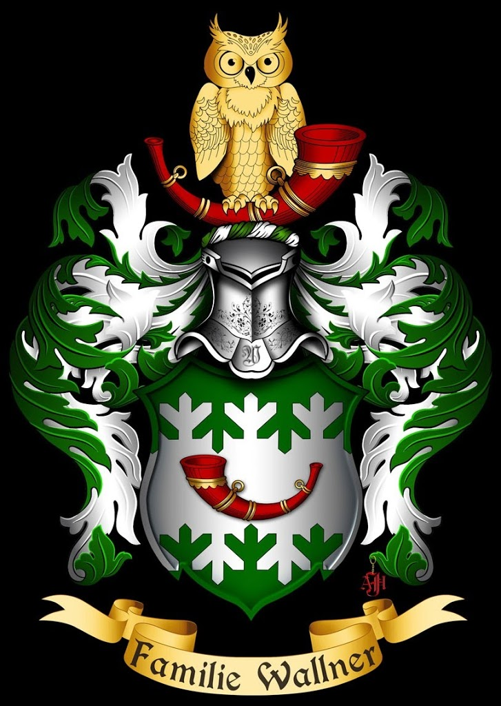

vert on a fess fir twigged argent a hunting horn gules
stringed or mantling vert and argent crest a hunting
horn gules stringed or charged with an owl or knights
helmet torse argent and vert motto "Familie Wallner"
drawn in a polish shape
Suggested by Heiko Wallner, who also sends a properly drawn version shown below.

If you would like to modify this blazon and see the effects click here to copy it into the "create" page.
